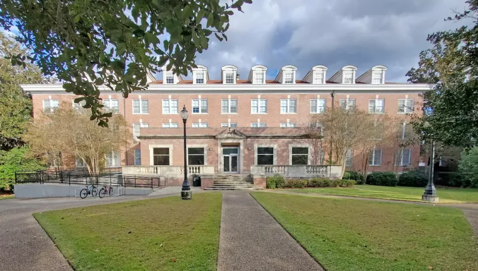
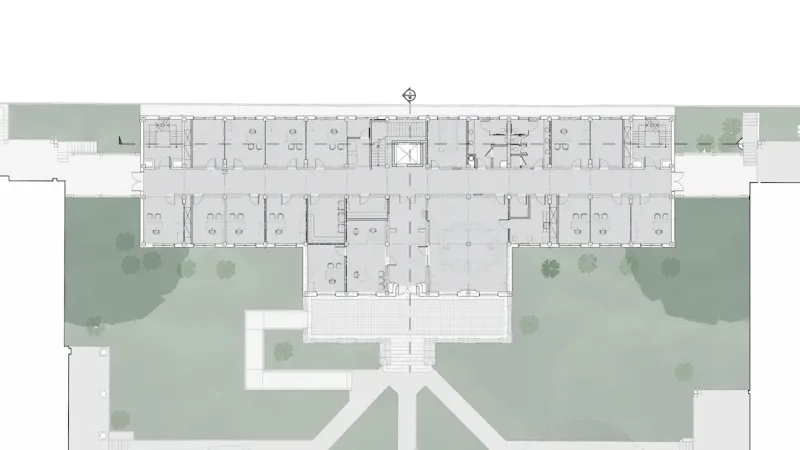

Hickman Hall Renovation
University of Southern Mississippi
Hattiesburg, Mississippi
The project consists of planning through construction/renovation of this existing three-story building, first constructed in 1951. The building is a Mississippi Landmark and the renovation has been coordinated with MDAH. This facility was once a residence hall with over 60 bedrooms and will be re-purposed to provide office, meeting, and administrative space and serve as transition space to support renovation of other campus buildings. Scope will include envelope restoration as well as interior upgrades, ADA compliance, and elevator replacement, along with renovations of mechanical, electrical, plumbing, and life safety systems.
Floor Area: 40,898 s.f.
Total Cost: $9,500,000 (estimated)
Role in Project: Architectural Firm of Record

